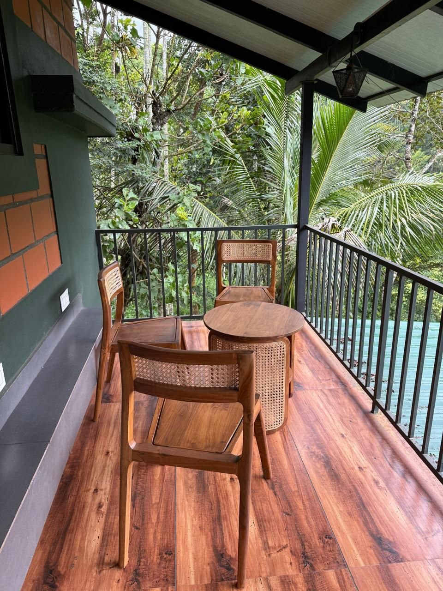
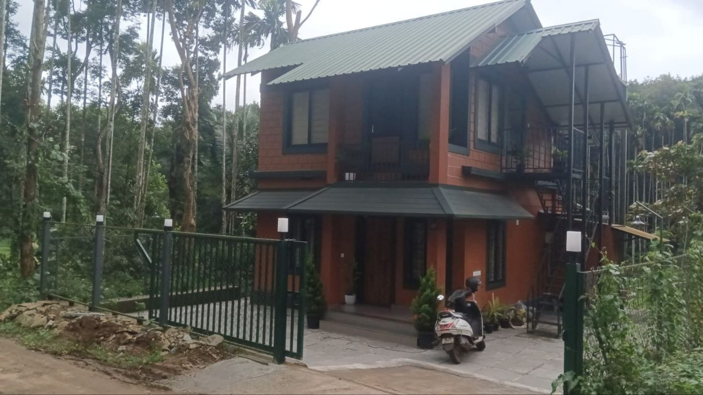
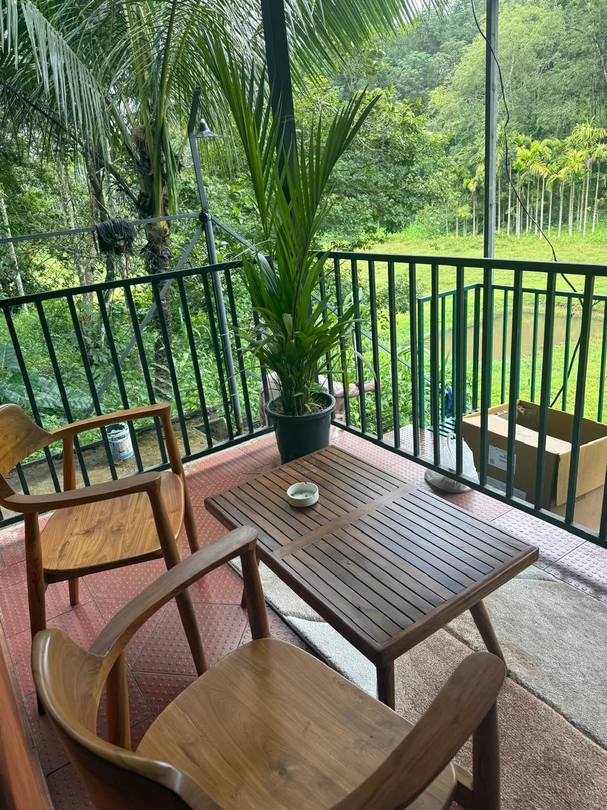

Edakkal Caves
Petroglyphs carved into a rock shelter more than 5,000 years ago, reached by a short, steep climb with big views.

From the homestay you can reach a sunrise viewpoint, a waterfall and a spice plantation — and still be back for dinner. Here's what most guests plan their days around.
Petroglyphs carved into a rock shelter more than 5,000 years ago, reached by a short, steep climb with big views.
Wayanad's highest peak and the famous heart-shaped lake on the way up. Permits and a guide are arranged locally; start early.
A three-tiered waterfall in the Sentinel Rock forest, with a pool for a cold dip and a canopy walk nearby.

The largest earthen dam in India, backed by hills and islands. Speedboat rides and a garden at the base.
A small freshwater lake ringed by evergreen forest, with pedal boats and an easy walking loop — good for families.

Morning and evening jeep safaris through teak and bamboo forest — elephants, gaur, deer and, if you're lucky, wild dogs.
Tell your host what you're interested in — treks, wildlife, temples, or just a slow coffee-country drive — and we'll put together a route, arrange a reliable driver, and sort permits where they're needed.
A quiet valley to come back to after every trip out.